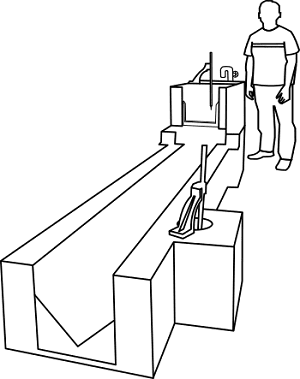
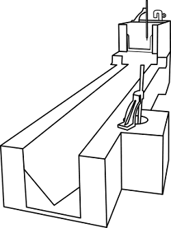
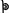
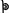
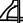
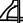
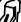

CALIBRATION OF RECTANGULAR NOTCH
Objective
To determine the coeffcient of discharge of a rectangular notch.
Apparatus used:
Rectangular notch, V-notch, hook gauge, measuring scale etc.
Start the pump by pressing start button.

Open the inlet valve and allow the water to fill in the channel till crest level.

 

Note the theoretical discharge of the rectangular notch.

 

Initial reading (water level till crest) = 4.6 cm
Final reading =
Head of water =
Theoretical discharge, Qth =
Note the discharge reading of the V-notch.

Initial reading (water level till crest) = 5.87 cm
Final reading =
Head of water =
Actual discharge, Qact =
Observation
Length of the collecting tank = 70 cm
Breadth of the collecting tank = 50 cm
Angle of V-notch = 90 °
Co-efficient of discharge for V-notch = 0.6
Result
Coefficient of discharge, Cd =
Characteristic Curves
Rankine's Efficiency vs Lift to Fall RatioTrial =

Trial =